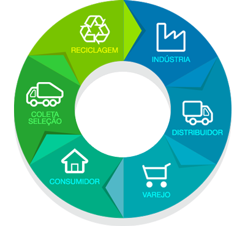
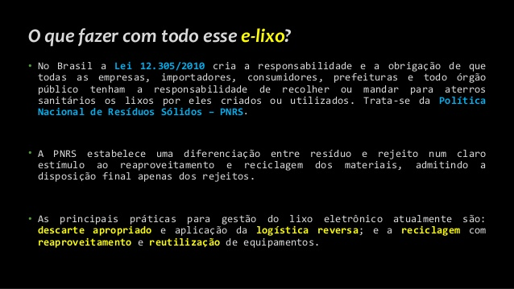

 Quer dizer que a Lei exige que as empresas assumam o retorno seus produtos descartados (ou seja, a retornabilidade dos produtos usados) e cuidem da adequada destinação, ao final de seu ciclo de vida útil.
Afim de viabilizar esta responsabilidade compartilhada, entra o instrumento da logística reversa que é definido pela Lei 12.305/10 como "instrumento de desenvolvimento econômico e social caracterizado por um conjunto de ações, procedimentos e meios destinados a viabilizar a coleta e a restituição dos resíduos sólidos ao setor empresarial, para reaproveitamento, em seu ciclo ou em outros ciclos produtivos, ou outra destinação final ambientalmente adequada".
O processo da logística reversa responsabiliza as empresas e estabelece uma integração de municípios na gestão do lixo. Neste processo, os produtores de um eletroeletrônico, por exemplo, têm que prever como sedará a devolução, a reciclagem daquele produto e a destinação ambiental adequada, especialmente dos que eventualmente poderão retornar o ciclo produtivo.
Por esta política, regulamentada no Decreto Nº 7.404 de 23 de dezembro de 2010, a União, os Estados, o Distrito Federal e os Municípios, de forma conjunta, organizarão e manterão um sistema de informação sobre resíduos e também ficarão incumbidos de fornecer ao órgão federal responsável pelo mesmo, todas as informações necessárias sobre os resíduos sob sua esfera de competência, na forma e na periodicidade estabelecidas no decreto.
De acordo com o artigo 15 do Decreto, os sistemas de logística reversa serão implementados e operacionalizados por meio de: acordos setoriais (contratos firmados entre o poder público e fabricantes, importadores, distribuidores ou comerciantes, onde partilham a responsabilidade pelo ciclo de vida do produto); regulamentos expedidos pelo Poder Público; ou termos de compromisso.
O prazo para os produtores adotarem as medidas de disposição final dos resíduos, de forma ambientalmente adequada, terminou este ano (2014), nos termos do art. 54 da Lei 12.305/10. Desta forma, o sistema de logística reversa, deverá estar implantado afim de lidar com os seguintes produtos: pneus; pilhas e baterias; embalagens e resíduos de agrotóxicos; lâmpadas fluorescentes, de mercúrio e vapor de sódio; óleos lubrificantes automotivos; peças e equipamentos eletrônicos e de informática; e eletrodomésticos.

Caberá aos consumidores devolver os produtos que não são mais usados em postos específicos, estabelecidos pelos comerciantes. Às indústrias cabe a retirada destes produtos, através de um sistema de logística, seja para reciclá-los ou reutilizá-los. À Administração incumbe criar campanhas de educação e conscientização para os consumidores, além de fiscalizar a execução das etapas da logística reversa.
Com a implantação da logística reversa, da conscientização para a educação ambiental e seus benefícios, pode-se mitigar impactos causados por descartes residuais, melhorar a qualidade de vida dos cidadãos urbanos e obter um balanço ambiental positivo. Além disso, dá-se um passo rumo ao desenvolvimento sustentável do planeta, pois possibilita a reutilização e redução no consumo de matérias-primas.
Regulamentação para o tratamento de lixo eletrônico
Em 2010, a Política Nacional de Resíduos Sólidos, ou PNRS, foi publicada, regulamentando o tratamento adequado para o lixo em geral. Apesar de não especificar uma norma para o lixo eletrônico, esta pode ser aplicada em sua maioria, para esse tipo de material. O Brasil é um dos poucos países da América Latina que possui regulamentações que, de alguma forma, são aplicadas ao tratamento de lixo eletrônico.